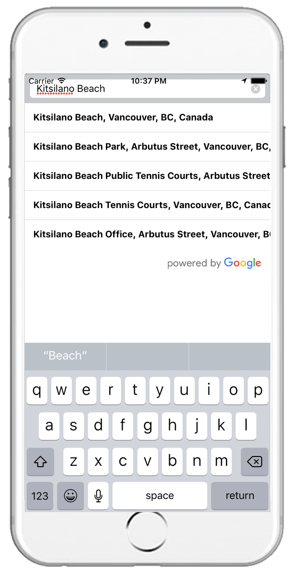
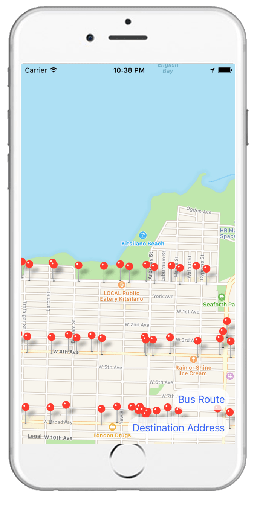
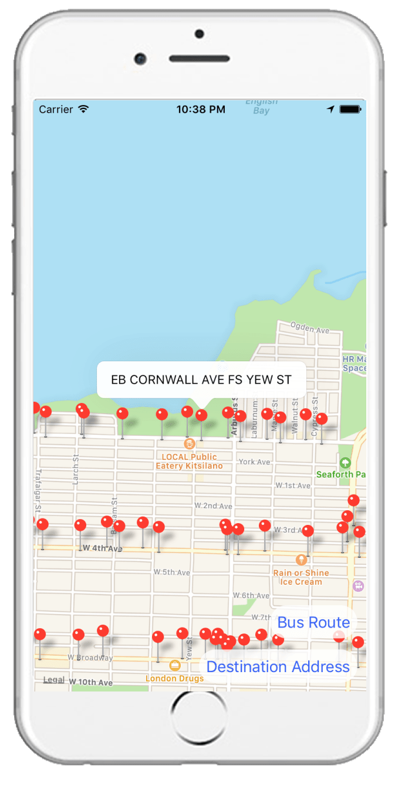
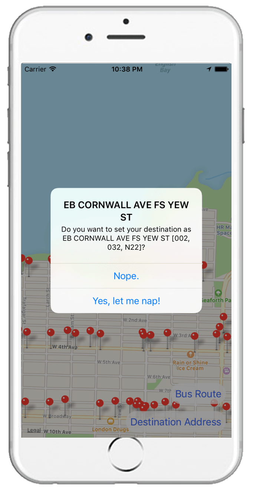
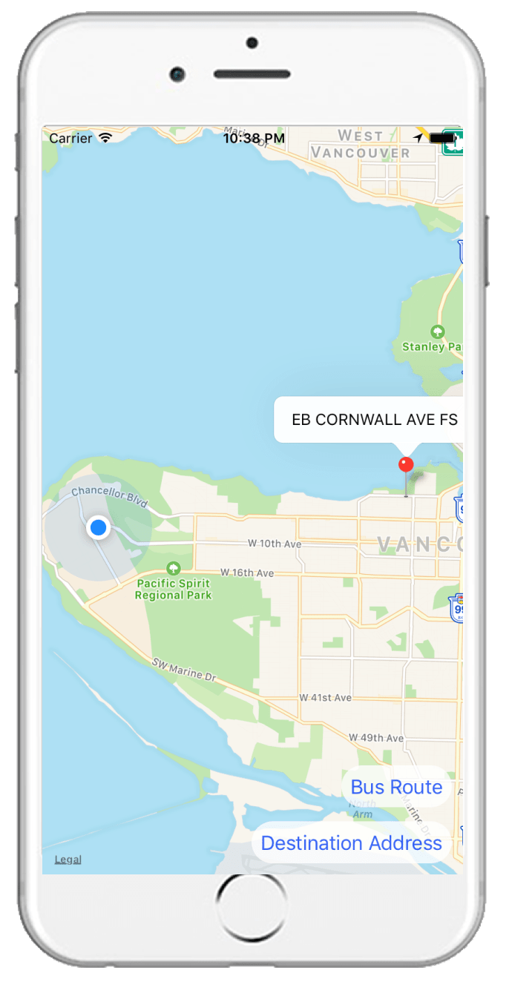
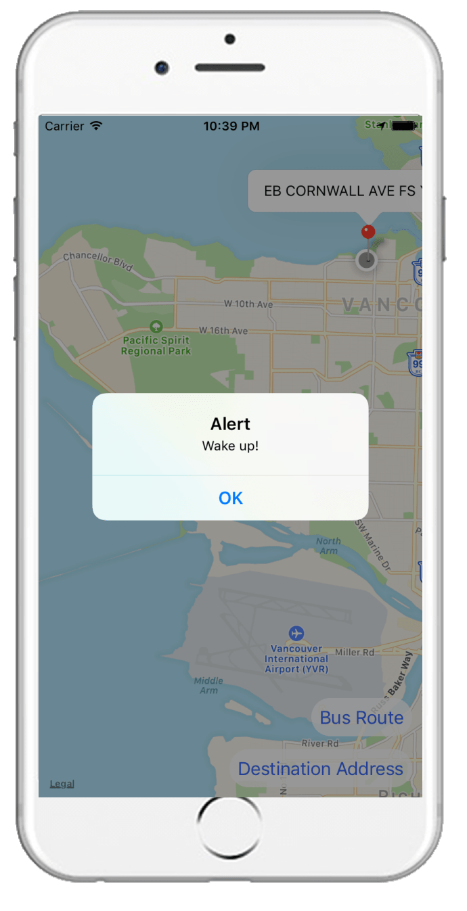

Busnapper
nwHacks · March 2017

Whether it is on the way to work or school, many people face long commute everyday. In a busy society, every minute and second matters; so does the time spent during those long commutes. Unfortunately, many find it hard to be productive in a moving vehicle, and they prefer to take a nap. However, this comes with a great risk of missing your bus stop - which I am sure has happened to every commuter at some point!
Busnapper is a mobile application that allows a user to specify the bus stop at which they wish to get off. Once the bus stop is specified, the user will be able to take a nap or do whatever he/she wishes. Once the user is within a 1 km radius of their desired location, his/her phone will start to vibrate, hopefully waking up the user in time.
How it was built
Busnapper was built with React Native at a 24-hour hackathon at UBC, in a team of 4 including myself. My tasks in the group involved the following:
- Retrieve the coordinates of the current user location in real-time and display it on the map interface;
- Implement a location search bar using GooglePlacesAutocompleteAPI;
- Design user flow and implement various UI functions such as displaying bus stop information and panning/zooming the map to fit both the user location and destination bus stop on the map.
User Flow
1. User enters destination address
First, the user enters the address of his/her destination. The original plan was to first display the map and show the user location, but we scrapped the plan when we encountered various run-time errors due to the initialization of the map before we could retrieve the user location.
2. App shows bus stops near the user’s destination address
My teammates built a function that interacts with the Translink API to plot all the bus stops in the current view of the map. Although the app pans the map to the destination address, the user can move freely around the map.
3. User selects the bus stop
 Whenever the user clicks on a pin, a popup displays the information about the bus stop, retrieved from the Translink API. To set the desired pin as the destination bus stop, the user must click on the popup, which would lead to another prompt that confirms the user’s decision.
4. Map pans out to show user location and the chosen bus stop
The user can view their position relative to the destination bus stop, as frequently as they’d like.
5. App alerts the user when they are almost at the bus stop
The distance between the user location and the bus stop is calculated in real time, and when the distance is under 1km, the app alerts the user to wake up.
Final words
We're definitely quite proud that we completed all that we set out to do, given that all of us had very limited mobile development experience to start. We weren't sure whether our project was too ambitious or too trivial as we scoped out our features—it turns out that our project was just the right size for our team!